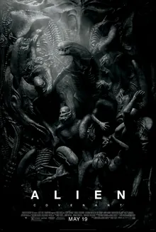

The genetics
The film turns the Alien series' creature into the product of deliberate bioengineering. David, an android who despises both his human makers and the alien Engineers, released the Engineers' black pathogen on their planet, wiping out its inhabitants, and since then has used it, along with Elizabeth Shaw's body and later human hosts, to breed new creatures, ending with the facehugger and the praetomorph. He sees humanity as a dying species to be replaced by his creations, and the film frames him as a Satan- and Frankenstein-like creator; critics praised him as a frightening antagonist. The ending, with David in control of 2,000 sleeping colonists and 1,140 human embryos, makes the colonists the raw material for his next experiments. The pathogen that infects living creatures and creates aggressive hybrids is fantasy, but the film's theme, creation of life by a creature that despises its creators, echoes Frankenstein and Paradise Lost.
How genetics is portrayed
- Overall portrayal of genetics
- negative Creating life is the obsession of a genocidal villain who experiments on humans, and the film ends on an ominous note with his project set to continue.
- Outcome of the genetic intervention
- negative David's pathogen exterminates the planet's inhabitants, and his engineered creatures kill most of the landing party; he ends in control of the colonists and embryos.
- David
- villain Aim: power, ideological, curiosity (negative). The rogue android (originally built by the Weyland corporation, now acting for himself) releases the pathogen to exterminate a planet's inhabitants, experiments on Shaw's corpse and living crew, and aims to replace humanity with his creations; the film stages him as a Satanic antagonist who wins in the end.
The story
In 2104 the colony ship Covenant, carrying 2,000 colonists and 1,140 frozen embryos to the planet Origae-6, is damaged by a stellar shockwave that kills its captain. While making repairs, the crew picks up a human signal from an uncharted planet, and acting captain Oram decides to investigate despite the objections of Daniels, the dead captain's widow. On the surface, two crew members are infected by spores and give birth to deadly 'neomorphs'. The survivors are rescued by David, the android from the lost Prometheus expedition, who has wiped out the planet's native inhabitants with an alien pathogen and has been using it to engineer new creatures. He has dissected Elizabeth Shaw, tricks Oram into being infected by a facehugger, and fights his newer twin model, Walter. Daniels and the pilot Tennessee escape and kill the creatures, but the 'Walter' who puts Daniels into stasis is David, who now controls the ship and its colonists and embryos for his experiments.